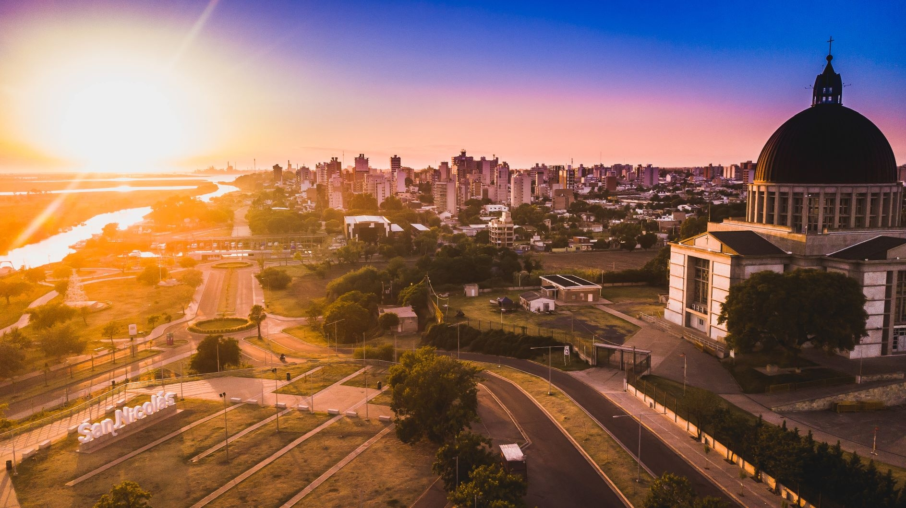

San Nicolas de los Arroyos
Nueva cuidad
Con los años que se vienen contruyendo y renobando la ciudad de San Nicolas de los Arroyos, hoy en día tenemos un nuevo San Nicolas, con Hermosas plazas, paseos costaneros, una playa de cara el rio Paraná, un bote turistico, una reserva natural en donde los turistas y habitantes pueden pasear y disfrutar de su naturaleza y un centro que poco a poco van renobando.
El iendente Manuel Pasaglia a puesto otros proyectos mas renobativos, como facilidad de que los jovenes puedan estudiar de forma gratuita al igual que las becas para los deportes.
A futuro se planea contruir una nuevo paseo costanero en bario quimica, sobre la barranca que da tambien cara al rio Yaguaron donde anteriormente era el seco, solo que con la sequía se forestó toda su superficie.
Que podemos encontrar en San Nicolas
El santuario
La casa del acuerdo
El teatro Rafael de Aguiar
El autodromo de San Nicolas
El estadio San Nicolas
Cosas a mojorar en San Nicolas
Como cualquier habitante de la cuidad muchas veces vemos cosas que nos falta como cuiadanos, la posibilidad de estar comodos en las calles, San Nicolas es una ciudad tranquila, aún así tenemos problemas de inseguridad, en los barrios mas bajos no hay luz, falta de agua, calles que nunca se terminandon de construir, obras que a los pocos años se deterioran, falta de colectivos, no implementan nuevas ingeniria basicas en la UTN, y muchas otras cosas mas que sí bien muchas otras cuidades lo padecen pero no queremos ser como los demas.

< ACTIVIDADES
Actividades para hacer
paseos |
lugares |
entrenimiento |
| costanera |
ecoparque |
parque gastronomico |
| somisa |
arenal |
teatro |